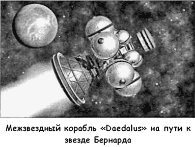

Проект «Daedalus»
Следующую попытку создать космический корабль, способный обеспечить межзвездный перелет, предприняли члены «Британского межпланетного общества».
Проект, получивший название «Дедал» («Daedalus»), был выдвинут на рассмотрение Общества ее членом Аланом Бондом в 1972 году.
В те времена активно муссировалась тема контакта с инопланетными цивилизациями при помощи межзвездной связи, активным сторонником этой идеи выступал знаменитый астрофизик Карл Саган. В пику ему Алан Бонд утверждал, что уже сегодня земляне располагают достаточными технологиями, с помощью которых можно долететь до ближайших звезд и вступить в непосредственный контакт с нашими «братьями по разуму». Его аргументы нашли поддержку среди членов «Британского межпланетного общества», что привело к организации семинаров по проблемам создания межзвездного корабля. Первое заседание «Межзвездной секции» состоялось 10 января 1973 года в Лондоне.
Выступая на этом заседании, Алан Бонд сообщил присутствующим, что, несмотря на большое количество публикаций, посвященных теме межзвездных перелетов, никто еще не рассматривал этот вопрос в комплексе, чтобы оценить хотя бы теоретически возможность организации такого перелета с использованием современных технологий. Например, необходимо установить массовые характеристики корабля, изучить возможные схемы двигательной установки, разобраться с межзвездной навигацией.
По его мнению, целью экспедиции должна стать звезда Бернарда (в то время это была единственная звезда, у которой была обнаружена планетная система), находящаяся на расстоянии 5,9 световых лет от Солнца; продолжительность экспедиции — от 30 до 40 лет; старт — не позднее 2000 года; максимальная скорость корабля — 15 % от световой. На основании этих исходных данных Бонд предлагал начать работу.
Следующий докладчик, Тони Мартин, сообщил Обществу о результатах сравнительного анализа различных перспективных двигателей. Этот анализ показал, что в проекте могут быть использованы либо космический прямоточный, либо ядерно-импульсный двигатели. Поскольку мы еще очень мало знаем о плотности водорода в межзвездной среде, имеет смысл остановить выбор на ядерно-импульсном двигателе с термоядерными зарядами в качестве толкателей. Чтобы сделать систему более эффективной, взрывы должны происходить в магнитном поле. Это не только делало бы выпуск импульса более направленным, но и уменьшало бы воздействие на экран-толкатель. Для пилотируемого космического корабля лучше всего подходят заряды на основе дейтериятрития или дейтерия — гелия-3. Последний имеет наиболее низкую нейтронную производительность. Корабль с таким двигателем легко мог бы достигнуть скорости в 104 км/с, что является минимальным требованием для экспедиции к звезде Бернарда.
За Мартином выступал Г. Джеймс Стронг. Он обсуждал проблемы межзвездной навигации. При этом он показал, что все функции по управлению кораблем могут быть переданы совершенному автопилоту, человеческое присутствие в рубке необходимо только при коррекциях, когда необходимо определить оптимальные траектории по выходу или входу в Солнечную систему.

Доктор Паркинсон добавил к списку возможных двигательных установок солнечный парус, который разгоняется до нужной скорости под воздействием лазеров, установленных в космосе.
На заседании рассматривались и вопросы поддержания связи с Землей. Было понятно, что для обеспечения такой связи потребуется энергоустановка мощностью в несколько сотен мегаватт и большая антенна, которую должен будет нести корабль.
Обговорив основные детали проекта, Общество приступило к работе. Основные технические решения были найдены за четыре года.
Например, определились с топливом. Поскольку гелий3 является достаточно редким на Земле элементом, было решено, что сначала построенный корабль отправится к Юпитеру, чтобы добыть из его атмосферы необходимое количество гелия-3.
Конструктивно корабль состоял из двух частей, одна из которых была резервуаром для топлива и могла быть сброшена после того, как баки опустеют. В носовой части корабля расположили жилой модуль на 18 астронавтов. 50-тонный бериллиевый диск должен был защищать модуль от столкновения с микрометеоритами, которые на таких скоростях представляют серьезную опасность. Для астрономических наблюдений в модуле имелись два 5-метровых телескопа и два 20-метровых радиотелескопа. Для текущего ремонта требовалось создать команду роботов.
Корабль собирается на околоземной орбите и стартует.
Первая ступень работает в течение двух лет, разгоняя корабль до промежуточной скорости. После этого ступень сбрасывается и включается двигатель второй ступени, работающий в течении 1,8 лет, прежде чем будет достигнута крейсерская скорость и начнется 47-летний полет к звезде Бернарда.
Проект «Дедал» продолжает жить и развивается. По сегодняшней осторожной оценке, он может быть реализован уже в середине XXI века.